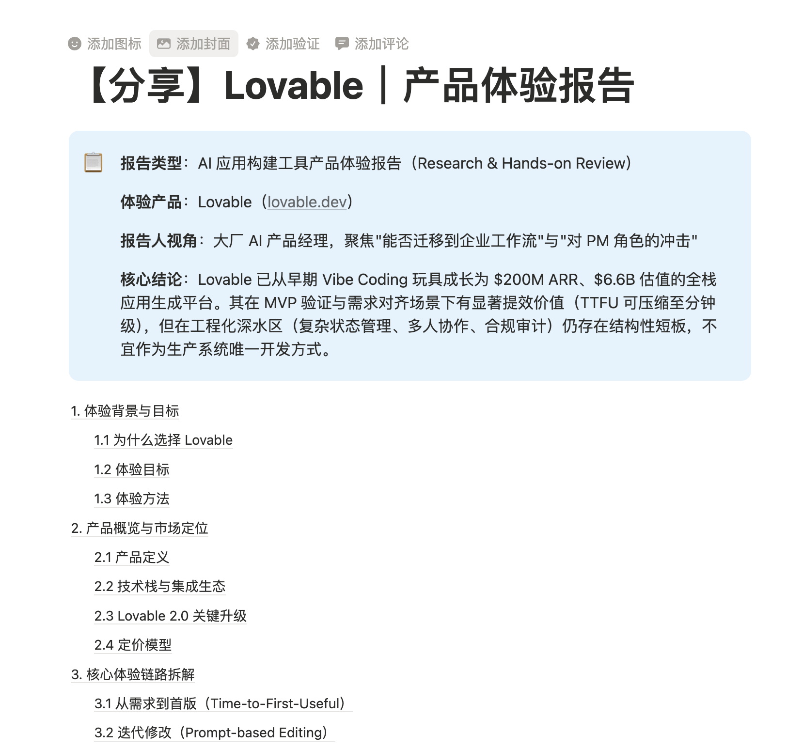
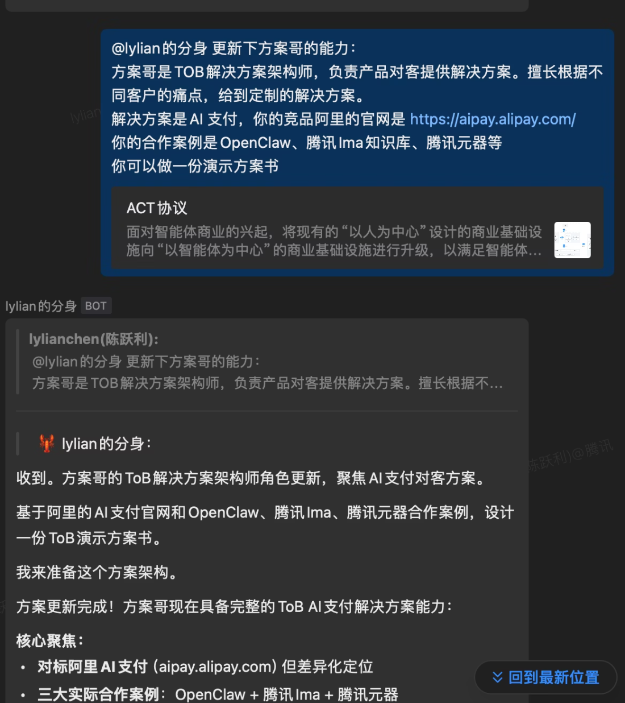
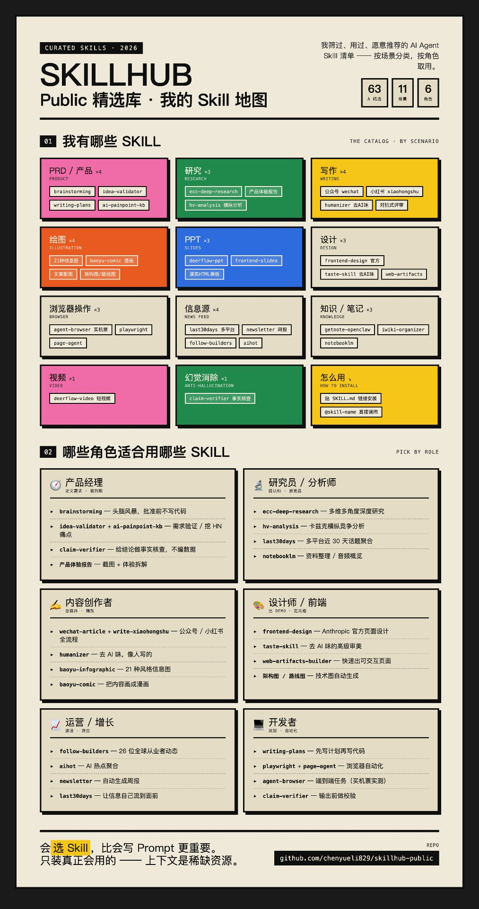

从 AI 小白到「养虾大户」
一个产品经理的 AI Native 实战：如何把 AI 用成一个产品军团
2026 是 Agent 爆发元年
我的工具一路换，本质是认知一路升。一页讲清三个阶段：
OpenClaw（内网）· Lighthouse · 飞书养虾
第一次让 AI 干活，跑通流程。体感：「哇，能跑通了！」
内网 Hermes · 本地 Hermes
把能力搬到手边，提速。体感：「快了，但还是单线。」
WorkBuddy · Claude Code · Claude Cowork · Claude Design
多 Agent 协作，进入「一个人指挥一支队伍」。体感：「一个人 = 一个小团队。」
— 核心洞察
对于产品经理，我做了哪些事？
两条主线：能力扩展 + 知识沉淀。具体来说：
制作自己的分身
Lylian 的产品军团：产品、运营、架构师，各司其职。通过 SOUL.md 定义人设，Skill Tools 扩展能力。
拓展技能 & 评测
大量使用并评测各种 Skill，筛出真正好用的。建立了 SkillHub Public 精选仓库。
构建个人知识库
Obsidian 本地管理 + Agent 可调用 + 多端 Sync。知识不是存起来，而是能被 AI 随时调用。
AI 原生新项目
想法 → Demo → 落地的小团队快跑模式。比如支付 Agent2Agent、金融资金业务产品助理（培养中）。
Aha Moment：当分身真的开始干活
理论说一百遍，不如看一次真实截图。以下都是我的分身在实际工作中产出的内容：
案例一：AI 运营团队 — 24 小时不休息
配置了一个运营团队：文案专员 + 热点抓取专员 + 管理员八万。目标很简单——保证每天 2 篇 AI 相关的小红书文章发布，发布前只需我确认。


案例二：24 小时滚动行业研究
让分身做 AI 支付产品专家，每 15 分钟汇报一次竞品动态思考，重要结论沉淀到 Memory 形成知识库，报告生成后自动发布到 iWiki。

案例三：ToB 解决方案架构师 — 快速定制角色
需要了解项目细节时，快速定制一个 ToB 方案架构师角色。基于阿里 AI 支付官网和 OpenClaw、腾讯 Ima 等工具合作案例，设计演示方案书。

一次性的分身与 Skill 配置，可长期复用——做能产生复利的事。
Skill 评测法：哪些夯、哪些拉？
先搞清楚：什么是 Skill？
Skill = 给 AI 写的 SOP（标准作业程序），不是一次性 Prompt，不是聊天记录。它是持久化的 SKILL.md 文件，包含完整的触发条件、工作步骤、约束规则、输出格式和质量红线。
| 维度 | 普通 Prompt | Skill |
|---|---|---|
| 形态 | 一次性对话 | 持久化 SKILL.md 文件 |
| 触发 | 每次手动粘贴 | 自动匹配 / @ 显式调用 |
| 内容 | 几句话 | 完整 SOP + 脚本 + 参考文档 |
| 复用 | 难，每次重写 | GitHub 链接一键安装 |
— 一句话区分
SkillHub Public 精选库
定位很简单：我筛过、用过、愿意推荐的清单。不盲目安装，只装真正会用的。

按场景取用：我有哪些 Skill
📋 PRD/产品 ×4
brainstorming · idea-validator · writing-plans · ai-painpoint-kb
🔬 研究 ×3
ecc-deep-research · 产品体验报告 · hv-analysis
✍️ 写作 ×4
公众号 · 小红书 · humanizer去AI味 · 对抗式评审
🎨 绘图 ×4
21种信息图 · 漫画 · 文章配图 · 架构图/路线图
📊 PPT ×3
deerflow-ppt · frontend-slides · HTML模板
🖥️ 设计 ×3
frontend-design · taste-skill去AI味 · web-artifacts
🌐 浏览器 ×3
agent-browser · playwright · page-agent
📡 信息源 ×4
last30days · newsletter · follow-builders · aihot
📚 知识/笔记 ×3
getnote · iwiki-organizer · notebooklm
🎬 视频 ×1
deerflow-video 短视频
🛡️ 幻觉消除 ×1
claim-verifier 事实核查
⚡ 怎么用
贴 SKILL.md 链接安装 · @skill-name 调用
按角色取用：哪些角色适合用哪些 Skill
🧭 产品经理
brainstorming · idea-validator · claim-verifier · 产品体验报告
🔬 研究员/分析师
ecc-deep-research · hv-analysis · last30days · notebooklm
✍️ 内容创作者
公众号 · 小红书 · humanizer · baoyu-comic
🎨 设计师/前端
frontend-design · taste-skill · web-artifacts · 架构图
📈 运营/增长
follow-builders · aihot · newsletter · last30days
💻 开发者
writing-plans · playwright · agent-browser · claim-verifier
只装真正会用的 —— 上下文是稀缺资源。
— SkillHub Public 核心理念 · github.com/chenyueli829/skillhub-public
知识库：Obsidian + Agent + Sync
一句话讲清架构：
知识库不是仓库，是 AI 的外挂大脑——存了能用，才是真存了。
关键认知：知识不是存起来就完了，而是要能被 AI 在正确的时间调用到正确的场景里。 我的知识库里存着产品方法论、行业笔记、项目经验——当我启动一个新项目或做一个判断时，Agent 能直接从知识库里调取相关背景。
最近也在想做一个线上版本……不过我的虾给我拍死了（评分不高）。😂 这恰恰说明了一个道理：AI 输出需要人的审美和判断来把关。
如何保持跟进：不用翻墙的 AI 资讯源
全场最容易被截图的一页——先给福利再讲方法。
我的信息获取三件套
Follow Builders / AIHot
信息流式被动接收，26 位全球从业者 Twitter 动态自动聚合推送
听播客
创业者视角的一手思考：MiniMax、智谱等从业者的深度对谈
关注头部大 V
有人帮你做预筛选：张咋啦、baoyu 等
— 信息获取原则
ProductLab：产品决策实验室
这是我目前最有代表性的 AI Native 项目。一个面向独立开发者和早期产品探索者的产品决策实验室。
痛点：早期探索缺的不是想法，是判断
一个产品点子冒出来后，通常需要回答这些问题：
- 这个需求是真痛点，还是我自己的想象？
- 用户现在用什么替代方案？
- 竞品已经做到什么程度？
- 最大风险是什么？下一步应该验证什么？
传统做法需要反复打开搜索、社区、竞品官网、评论区——看了很多，但不知道下一步做什么。
我做了一套什么
把产品研究链路压成一组 AI Native 工具：
核心创新：判断卡
不写长报告、不打 100 分。固定输出一张判断卡，只回答这几件事：
故意限制输出——因为早期产品探索需要的不是长，而是清楚。
AI Native 的四个体现
🔄 流程引擎
把 AI 当流程引擎而非文本助手。参与完整工作流：检索→归纳→结构化→生成→提炼。
📦 压缩能力
能把模糊问题压缩成可判断结构。强制收敛到可行动粒度。
🏷️ 证据分级
不伪装确定性。竞品证据/用户反馈/趋势信号/待验证假设——缺证据就标出来。
♻️ 系统沉淀
把个人经验封装成可复用 Skill。标准模板 + 数据结构 + 质量红线 + 验证清单。
三条经验
- AI Native 的关键不是「生成更多」，而是「压缩更准」。限制输出反而更有价值。
- 好的 AI 工具需要质量红线。不编数据、不给伪建议、不堆砌无关资料。
- 个人能力可以通过 Skill 变成系统能力。过去在脑子里，现在可以封装成 AI 重复执行的方法。
下一步方向
判断台产品化
从工具集合收敛成主体验：输入想法 → 直接得到判断卡
真实数据源接入
接入搜索、社区、GitHub、PH、小红书实时数据
判断卡传播机制
截图/Markdown复制/投稿案例页，变成可传播资产
产品经理用 AI 能做什么？
把前面的故事抽象成一张能力地图——这是我希望你们带走的东西：
| 能力维度 | AI 具体在做什么 |
|---|---|
| 提认知 | 市场研究 · 竞品分析 · 行业趋势扫描 |
| 做判断 | 正方反方、多维度思考（→ ProductLab 判断卡） |
| 去行动 | 用户调研 · 机会洞察 · PRD · Vibe Coding · 设计 Demo |
| 找合作 | 架构师 Agent — 技术可行性评估 |
| 做运营 | 自动化运营 — 内容生产到发布的全链路 |
| 懂用户 | 模拟小白用户 — Agent-Browser 跑用户反馈和痛点 |
— 核心方法论
金线三连 🎯
1. 换工具是表象，升认知是本质。
2. 一个人可以靠 AI 扩展成一个团队。
3. 把经验写成 Skill，让 AI 替你重复执行。
仓库地址：github.com/chenyueli829/skillhub-public
资讯源 / Skill 评测法 / ProductLab 思路 —— 欢迎来抄、来共建、来拍砖 🔥